Pupil’s Book — Clothes
Activities 1–9 and the Pronunciation box appear in their original order, followed by the printed Revision 1 pages 18–19 and the Project page 20 exactly as they are allocated to this lesson. Listening notes are kept separate from the book’s wording.
1 Listen and match the children with their names.
- Laura
- Matt
- Robert
- Susan
- John
0 of 5 chosen. Your choices are kept on this page.
The page prints the names in two columns: Laura, Matt and Robert on the left, Susan and John on the right. The five names are listed here in that printed order.
No printed answer. The names are matched by listening, and the recording was not supplied. The picture and all five names are reproduced exactly, so you can listen to the original track and match what you hear. Nothing is marked right or wrong here.
2 Listen and repeat.
Open the source page · Pupil’s Book · p. 15
This is the original supplied image, shown without redrawing or generation.
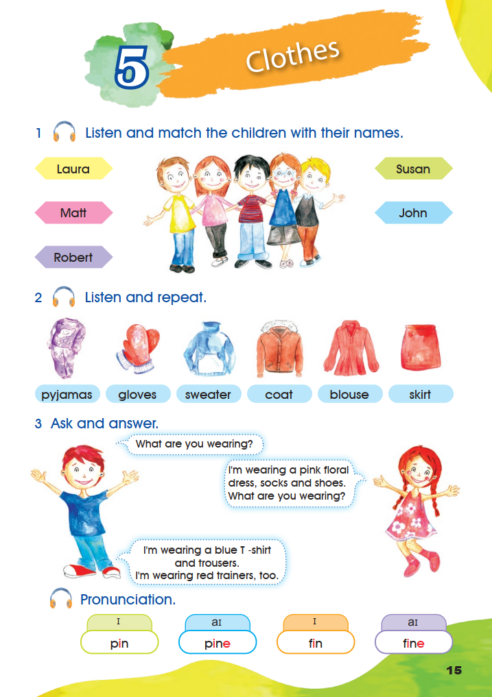
3 Ask and answer.
The page prints three speech bubbles. Read them with a partner, then write your own answer.
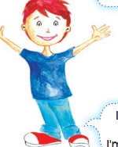
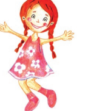
What are you wearing?
I’m wearing a pink floral dress, socks and shoes. What are you wearing?
I’m wearing a blue T-shirt and trousers. I’m wearing red trainers, too.
The three printed bubbles are quoted exactly, including “I’m wearing a blue T-shirt and trousers.” Pair-work answers are personal, so no key is published.
Pronunciation.
ɪ
- pin
aɪ
- pine
ɪ
- fin
aɪ
- fine
The four printed word boxes are reproduced in their printed order, each with the symbol the page prints above it. Listen to the original recording or a reliable model, then repeat the words.
Open the source page · Pupil’s Book · p. 15
This is the original supplied image, shown without redrawing or generation.
4 Practise with a partner.
What is she wearing?
She’s wearing ………
What is he wearing?
He’s wearing ………
Model answers: She’s wearing a red dress and a blue bag. · He’s wearing a yellow T-shirt, blue trousers and red shoes.
The page prints the two question frames and the two dotted answer frames. The picture is the only source for the description, so other correct descriptions are accepted.
5 Before you read, match.
Match each printed skirt picture with its pattern word.
The four words are printed under the four pictures in the order floral, striped, dotted, plain, which is not the order of the pictures themselves. The printed word order is kept in every menu.
Picture 1 (red stripes) — striped · Picture 2 (small spots) — dotted · Picture 3 (one colour, no pattern) — plain · Picture 4 (flowers) — floral.
The matching follows the pattern printed in each picture.
Open the source page · Pupil’s Book · p. 16
This is the original supplied image, shown without redrawing or generation.
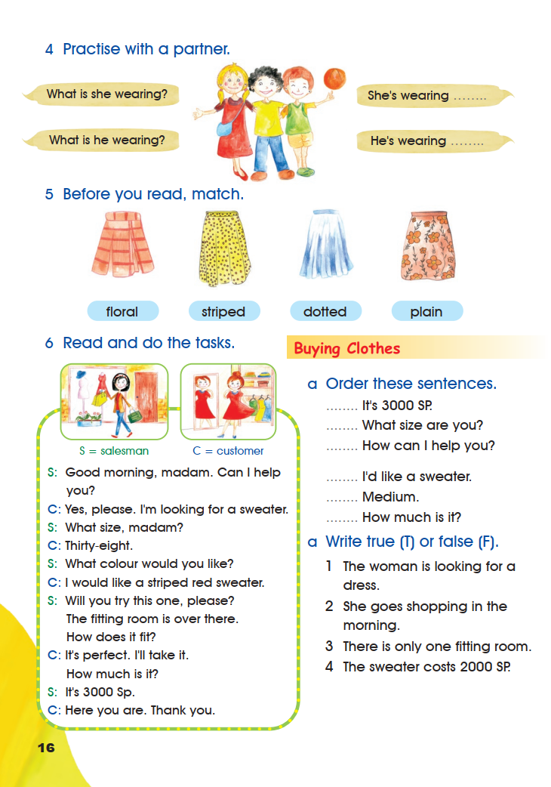
6 Read and do the tasks.
Buying Clothes · S = salesman · C = customer
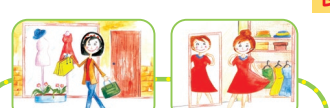
S: Good morning, madam. Can I help you?
C: Yes, please. I’m looking for a sweater.
S: What size, madam?
C: Thirty-eight.
S: What colour would you like?
C: I would like a striped red sweater.
S: Will you try this one, please? The fitting room is over there. How does it fit?
C: It’s perfect. I’ll take it. How much is it?
S: It’s 3000 Sp.
C: Here you are. Thank you.
a Order these sentences.
Write the number that shows where each printed sentence belongs in the conversation, from 1 to 6.
- 1
It’s 3000 SP.
- 2
What size are you?
- 3
How can I help you?
- 4
I’d like a sweater.
- 5
Medium.
- 6
How much is it?
0 of 6 numbered.
a Write true (T) or false (F).
The page prints the letter a twice in activity 6. Both printed labels are kept exactly as they appear.
- 1
The woman is looking for a dress.
- 2
She goes shopping in the morning.
- 3
There is only one fitting room.
- 4
The sweater costs 2000 SP.
0 of 4 answered.
a. Order these sentences
- How can I help you?
- I’d like a sweater.
- What size are you?
- Medium.
- How much is it?
- It’s 3000 SP.
The order follows the printed dialogue: greeting, request, size question, size answer, price question, price answer.
a. True or false
- The woman is looking for a dress. — False. “I’m looking for a sweater.”
- She goes shopping in the morning. — True. The salesman says “Good morning, madam.”
- There is only one fitting room. — Not settled by the printed text. The salesman says “The fitting room is over there”, which does not say how many fitting rooms the shop has. The item is left for the teacher and is not marked right or wrong here.
- The sweater costs 2000 SP. — False. “It’s 3000 Sp.”
Open the source page · Pupil’s Book · p. 16
This is the original supplied image, shown without redrawing or generation.
Let’s Learn
I — I’m wearing a skirt. / I’m not wearing shorts.
He / She / It — She’s putting on a sweater. / She isn’t putting on a scarf.
You / We / They — We’re buying shoes. / They aren’t buying trousers.
- wear – wearing
- do – doing
- study – studying
- eat – eating
- buy – buying
- put – putting
- have – having
- take – taking
- swim – swimming
- go – going
The box shows the present continuous: am / is / are + verb + -ing, with the negative formed by not. The pink list gives the ten -ing forms printed on the page.
7 Read and number.
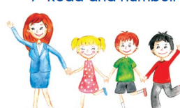
1 Rana is wearing a dotted pink dress and blue shoes.
2 Nadia is wearing ablue jacket, a blue skirt, a white shirt and grey shoes.
3 Sami is wearing a green T-shirt, grey shorts, white socks and brown shoes.
4 Rami is wearing a red sweater, grey trousers and red shoes.
0 of 4 numbered.
Bubble 2 prints “ablue” as one word. It is kept exactly as printed rather than silently corrected.
Picture 1 — 2 (blue jacket, blue skirt, white shirt) · Picture 2 — 1 (pink dotted dress) · Picture 3 — 3 (green T-shirt, grey shorts) · Picture 4 — 4 (red sweater, grey trousers).
The answers follow the clothes printed on each figure.
Open the source page · Pupil’s Book · p. 17
This is the original supplied image, shown without redrawing or generation.
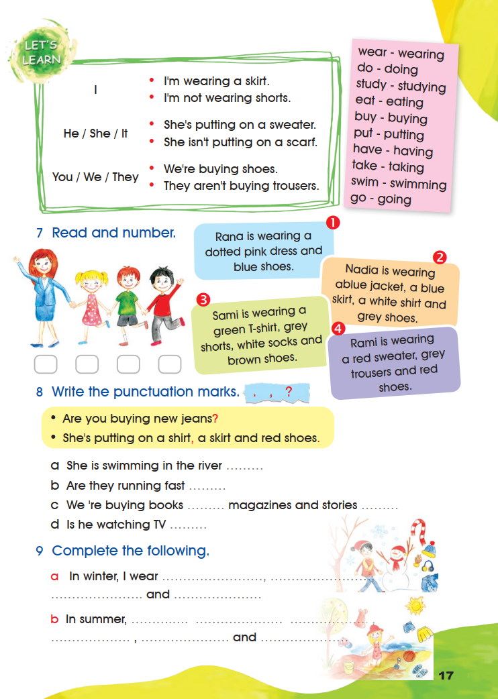
8 Write the punctuation marks.
The page prints three marks to choose from: . , ?
Are you buying new jeans?
She’s putting on a shirt, a skirt and red shoes.
- a
She is swimming in the river
- b
Are they running fast
- c
We ’re buying books magazines and stories
- d
Is he watching TV
0 of 5 filled.
Item c prints “We ‘re” with a space before the apostrophe; the printed spacing is kept.
a. . (a statement) · b. ? (a question) · c. , then . (a comma between items in a list, a full stop at the end) · d. ? (a question).
9 Complete the following.
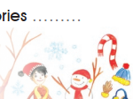
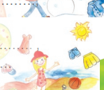
a. In winter, I wear a coat, a scarf, gloves and a hat. b. In summer, I wear a T-shirt, shorts, a hat and sandals.
The page prints four dotted spaces in each line with pictures of winter and summer clothes beside them. Both lines are personal, so other correct clothes words are accepted.
Open the source page · Pupil’s Book · p. 17
This is the original supplied image, shown without redrawing or generation.
Revision 1 · 1 Match.
2 Choose a, b or c.
3 Read and complete.
In winter it gets cold and . I usually wear a , a and I sometimes wear .
In summer, it’s always hot and . My friend Lily wears dotted s and dresses. She never wears .
The page prints clothes pictures beside each gap: a coat, a scarf, gloves, a dotted dress, a floral dress and trousers. The word “cold and” is followed by a picture of rain, and “hot and” by a picture of the sun.
1 Match: 1 b · 2 d · 3 e · 4 c · 5 a.
2 Choose: 1 a (size) · 2 c (tastes) · 3 b (in the morning) · 4 b (smell).
3 Read and complete: cold and rainy; a coat, a scarf and sometimes gloves; hot and sunny; dotted dresses; floral dresses; never wears trousers.
The weather words follow the printed rain and sun pictures; the clothes words follow the printed pictures beside each gap. The page prints no key, so “rainy / wet / raining” and “sunny” are accepted as the same idea.
Open the source page · Pupil’s Book · p. 18
This is the original supplied image, shown without redrawing or generation.
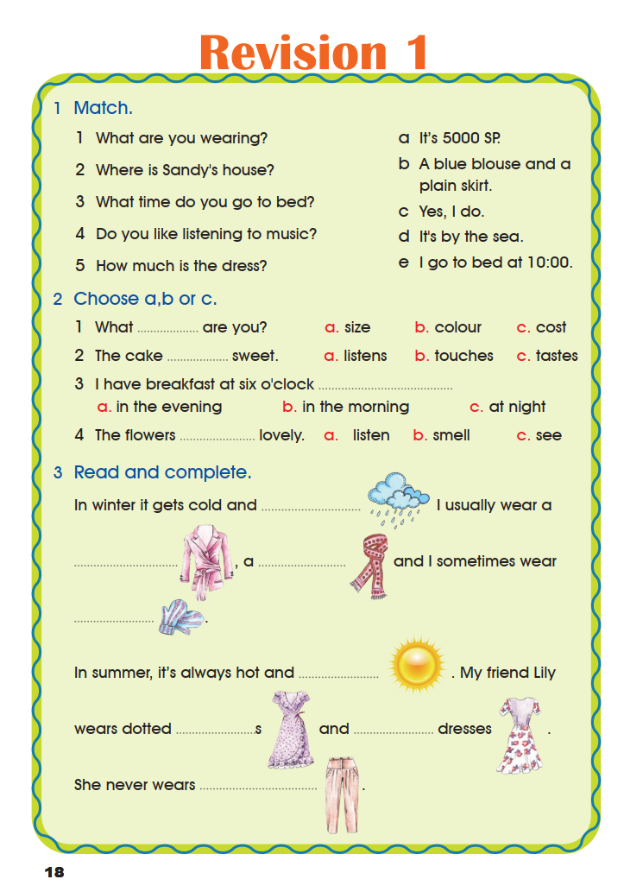
4 Choose the correct word.
The page numbers these five items a, b, c, d and then 5. The printed numbering is kept exactly.
5 Write sentences then draw.
4 Choose the correct word: a is swimming (“now”) · b wears (“always” = a habit) · c play (after does) · d Maha’s (possession) · 5 has to (“she”).
5 Write sentences then draw: sentences b–e are personal. Model answers: My mother always wears a coat in winter. · I sometimes wear a skirt. · Today I am wearing jeans. · I never wear shorts in winter.
Item a is printed as a complete sentence and also appears in the model answers for the writing task; the page prints no key for b–e.
Open the source page · Pupil’s Book · p. 19
This is the original supplied image, shown without redrawing or generation.
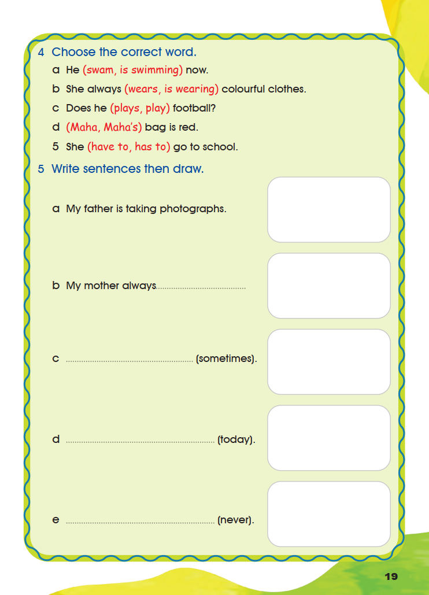
Project · Choose A or B.
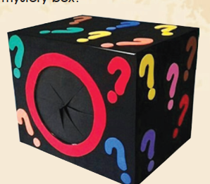
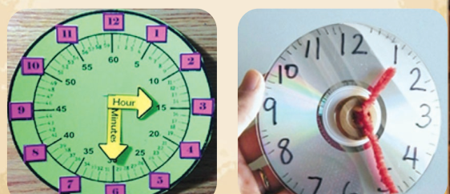
A What is in the mystery box?
- Make a mystery box from an old cardboard box.
- Put things in the box (apple, notebook, toy, etc.)
- Ask your friends to use their senses to guess what is in the box.
- They can say what they touch, smell or hear then you tell them if it’s correct or not.
B My time is important.
Make your clock and ask your friends about the time.
The project is personal work. The two choices and every printed bullet are reproduced exactly; no answer is marked.
Open the source page · Pupil’s Book · p. 20
This is the original supplied image, shown without redrawing or generation.
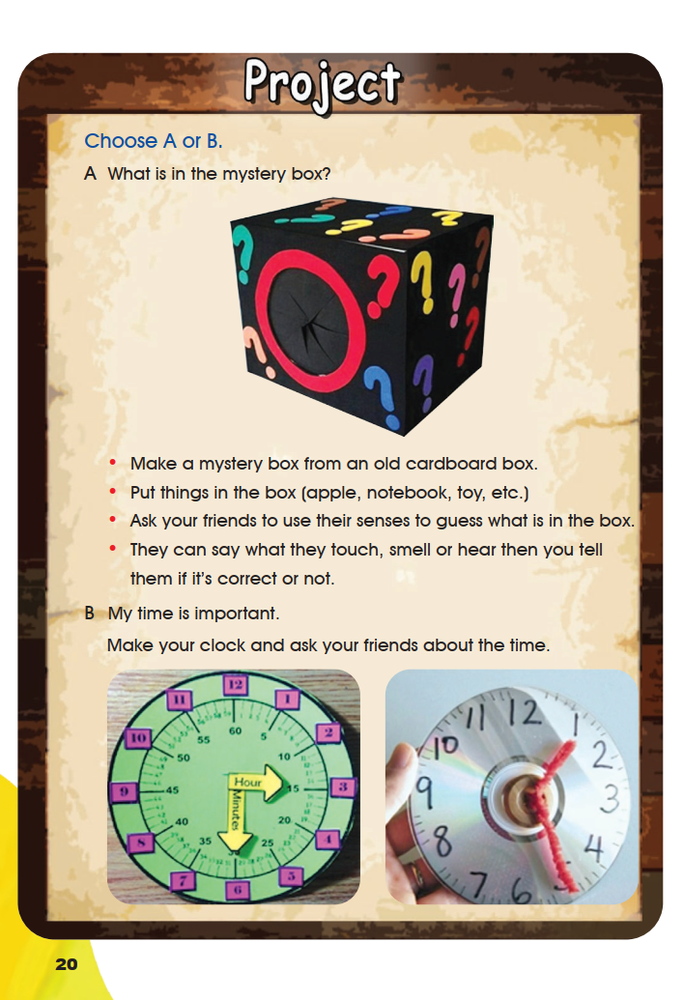